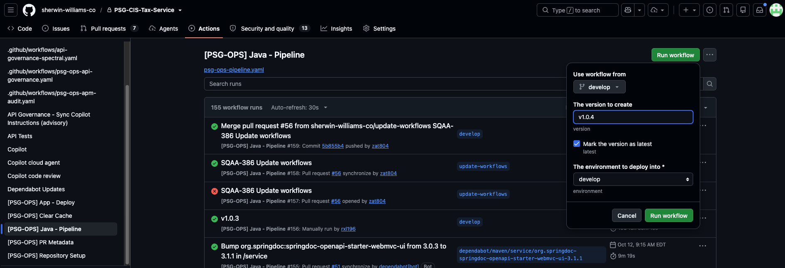
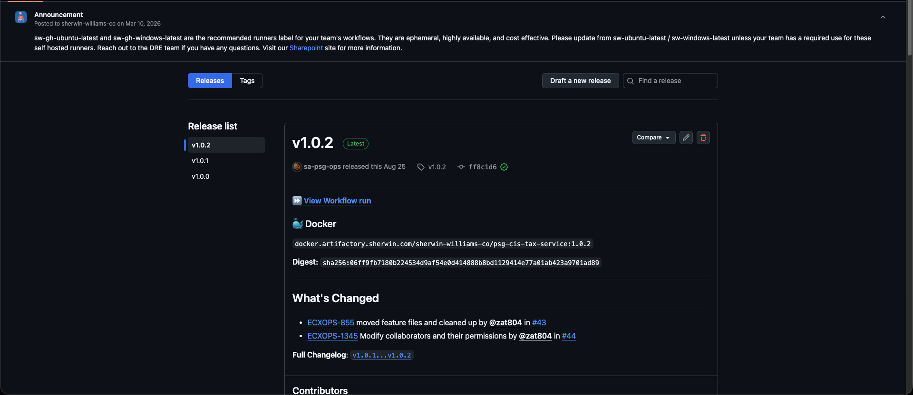
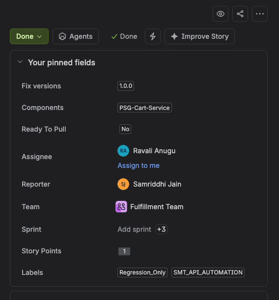

When one number goes up, every number to its right resets to 0.
PSG-CIS-Tax-Service, example version:
1.4.2
| What changed | Bump | New version |
|---|---|---|
| Bug fix / security fix; existing consumers still work | PATCH |
1.4.3
|
| Optional response field added; existing consumers still work | MINOR |
1.5.0
|
| API contract changed (consumers must update) | MAJOR |
2.0.0
|
Repo → Actions tab → [PSG-OPS] Java - Pipeline → Run workflow

Run from the develop branch, enter the new version
(e.g. v1.0.4), and click Run workflow.
Repo home page → right sidebar → Releases (or the Tags tab)

Illustrative screenshot: Tax Service v1.0.2.
Release notes list the included changes.

Each ticket's Fix Version field shows the release that contains it.
Check the ticket's Fix Version, then confirm that release is deployed to QA.
Illustrative screenshot: Cart Service 1.0.0.
PM/BA = project manager / business analyst
develop
vX.Y.Z
The release is not complete until a repo gatekeeper approves it.
Developer supplies the version; PM/BA records it;
Release Management deploys it. Same version in every environment.
v1.4.3) that a release points
to.